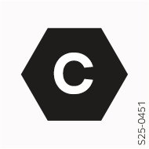

Étiquette sur la fiche du câble de recharge
L’étiquette fournit des informations sur la compatibilité des composants de charge du véhicule et l'emplacement de charge.

Étiquetage du type de fiche pour la charge en courant alternatif (CA)